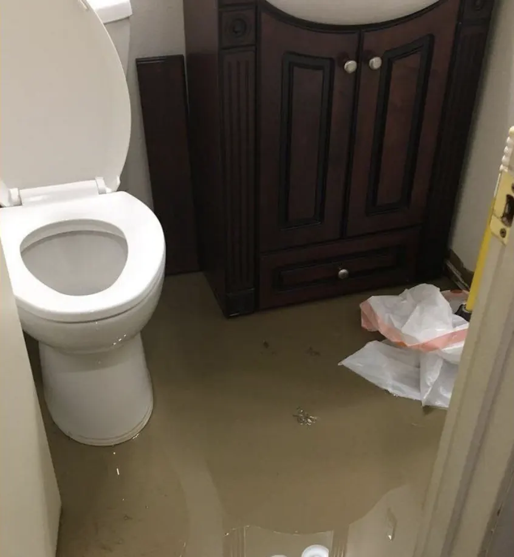

Tıkanıklık rehberi
Tuvalet Tıkanırsa Ne Yapmalı? Klozet ve Alaturka Tuvalet Rehberi
Tuvalet tıkanınca panik olmak çok normal; ama ilk birkaç dakikada doğru şeyi yaparsanız hem taşmayı önlersiniz hem de çoğu zaman sorunu kendiniz çözersiniz. Klozet ve alaturka tuvalet için ayrı ayrı anlattık.

Tuvalet tıkanırsa ne yapmak lazım? İlk yapılacaklar
- Sifonu bir daha çekmeyin. Su yükseliyorsa ikinci sifon taşmaya sebep olur.
- Rezervuarın altındaki ara musluğu saat yönünde çevirip kapatın; rezervuar sızdırıyorsa klozeti dolduramaz.
- Klozetin çevresine havlu serin; olası bir taşmada zemini ve alt katı korur.
- Klozette su çok yüksekse bir kapla bir kısmını kovaya alın; pompalarken taşma riski azalır.
Tuvalet tıkanıklığını kendim açabilir miyim?
Tuvalet kâğıdı fazla atıldıysa ya da yumuşak bir tıkanıklıksa evet, çoğu zaman bir klozet pompasıyla açılır. Islak mendil, ped, bez ya da düşen sert bir cisim varsa pompa genellikle cismi daha da ileri iter; bu durumda zorlamayın.
Tavsiyemiz: Banyodaki yer süzgecinden su geliyorsa ya da alt katlarda da benzer şikâyet varsa sorun klozette değil bina kolonundadır. Bunu evde açmanız mümkün değil.
Klozet tıkanıklığı nasıl açılır?
Klozet pompası
Lavabo pompası değil, alt kısmında uzantı (flanş) olan klozet pompası kullanın; klozetin gider ağzına tam oturur. Pompanın lastiğini örtecek kadar su olmalı. Yavaşça oturtup havayı çıkarın, sonra 15-20 kez kuvvetli basıp çekin.
Sıcak su ve sıvı sabun
Yalnızca kâğıt tıkanıklığında işe yarar: klozete biraz sıvı bulaşık deterjanı ekleyin, üzerine çok sıcak (kaynar değil) musluk suyu dökün ve 15-20 dakika bekleyin. Kaynar su dökmeyin; seramik ani ısıdan çatlayabilir.
Klozet spirali
Hırdavatçılarda klozet spirali satılır; ucu klozetin sırlı yüzeyini çizmesin diye kılıflıdır. Spirali klozetin ağzından nazikçe ilerletip çevirin.
Dikkat: Telefon, diş fırçası, oyuncak gibi sert bir cisim düştüyse pompa kullanmayın. Cisim ilerledikçe çıkarmak zorlaşır; bu durumda kamerayla yerini görüp çıkarıyoruz.
Alaturka tuvalet tıkanıklığı nasıl gider?
Alaturka tuvaletlerde dirsek klozete göre daha derin ve dardır; tıkanıklık genellikle bu dirseğin dibinde olur. İyi haber şu: alaturkada gider ağzı geniş olduğu için pompa ve spiral daha rahat çalışır.
Pompa ile
Gider ağzını tam kapatan geniş bir pompa kullanın. Hazneye pompanın lastiğini örtecek kadar su doldurun ve kuvvetli, kısa hareketlerle pompalayın.
Kova ile su
Hafif kâğıt tıkanıklığında bir kova ılık suyu yüksekten ve tek seferde gider ağzına dökmek basınç yaratıp tıkanıklığı ilerletebilir. Su yükseliyorsa ikinci kovayı dökmeyin.
Spiral ile
Spirali gider ağzından dirseğe doğru ilerletin; alaturkanın dirseği derin olduğu için spiral birkaç kez takılabilir, zorlamadan çevirerek ilerleyin.
Dikkat: Alaturkadan klozete dönüştürülmüş tuvaletlerde altta eski, dar bir dirsek kalmış olabilir. Böyle bir tuvalet sık tıkanıyorsa evde açmak geçici çözümdür; hattı kamerayla görmek gerekir.
Tuvalete neler atılmamalı?
- Islak mendil (paketinde "tuvalete atılabilir" yazsa bile)
- Hijyenik ped, tampon, bebek bezi
- Kâğıt havlu ve peçete
- Pamuk, kulak çubuğu, diş ipi
- Yemek artığı ve yağ
- Kedi kumu
Bunların hiçbiri suda tuvalet kâğıdı gibi dağılmaz; dirseklerde ve kolonun döndüğü noktada birikip tıkaç oluşturur.
Sifonu çekince su neden yükseliyor?
İki ihtimal var: ya klozetin kendi dirseği tıkalıdır ya da klozetten sonraki hat ya da bina kolonu doludur. Sadece sizin tuvaletinizde oluyorsa çoğunlukla klozettir. Banyodaki diğer giderler de fokurduyor, yer süzgecinden su geliyorsa sorun ileridedir.
Ne zaman usta çağırmalısınız?
- Pompa ile 2-3 denemede sonuç alamadıysanız
- Sert bir cisim düştüyse
- Yer süzgecinden ya da başka giderden su geliyorsa
- Alt katlarda da şikâyet varsa
- Tuvalet sık sık tıkanıyorsa
Tuvalet tıkanıklığı açma hizmetimizde çoğu durumda klozeti sökmeden açıyoruz; sökmek gerekirse contasını yenileyip yerine takıyoruz. Ödemeyi iş bitince alıyoruz.
Uğraşmak istemiyorsanız
Evde denediniz ve olmadı, ya da hiç uğraşmak istemiyorsunuz; çok normal :) Tuvalet Tıkanıklığı Açma için 7/24 arayabilirsiniz. Kırmadan açıyor, ödemeyi iş bitince alıyoruz.
7/24 acil tıkanıklık açma servis numarası0535 815 18 04Gece, hafta sonu ve bayram dahilSık sorulan sorular
Tuvalet tıkanırsa ne yapmalıyım?
Sifonu tekrar çekmeyin, rezervuarın ara musluğunu kapatın, klozetin çevresine havlu serin ve klozet pompasıyla deneyin. Sert bir cisim düştüyse pompa kullanmayın.
Alaturka tuvalet tıkanıklığı nasıl gider?
Geniş bir pompa ya da spiral ile çoğu zaman açılır. Hafif kâğıt tıkanıklığında bir kova ılık suyu tek seferde dökmek işe yarayabilir; su yükseliyorsa devam etmeyin.
Tuvalete kaynar su dökülür mü?
Hayır. Seramik ani ısıdan çatlayabilir; çok sıcak musluk suyu yeterlidir.
Islak mendil tuvaleti tıkar mı?
Evet. Tuvalet kâğıdı gibi suda dağılmaz; tuvalet tıkanıklığının en sık sebeplerinden biridir.
Tıkanıklık rehberi
Diğer rehber yazıları
Şu an hizmet veriyoruz · 7/24
Kendiniz açamadınız mı?
7/24 arayabilir ya da WhatsApp'tan fotoğraf gönderebilirsiniz.
7/24 arayın0535 815 18 04- Ortalama 30 dakikada adreste
- Fiyat işe başlamadan söylenir
- Kırmadan, gerekirse kameralı